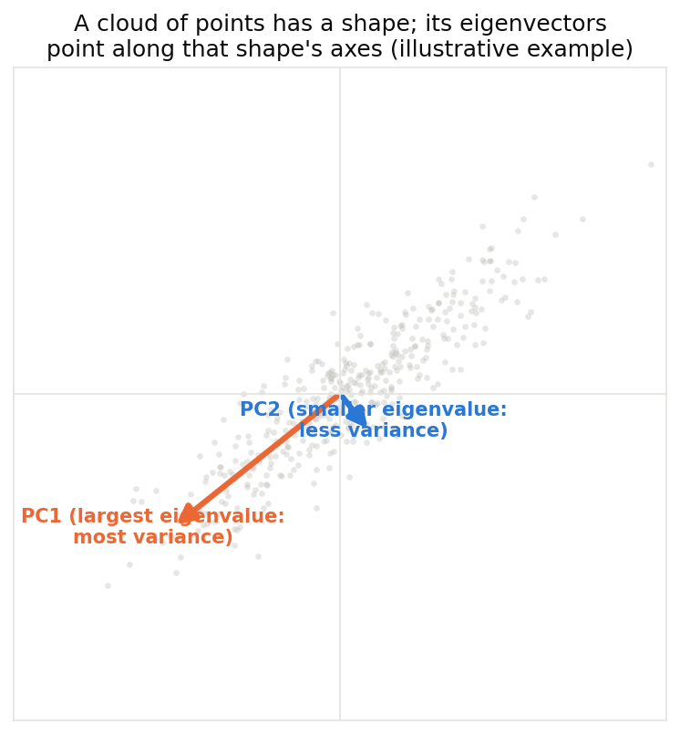
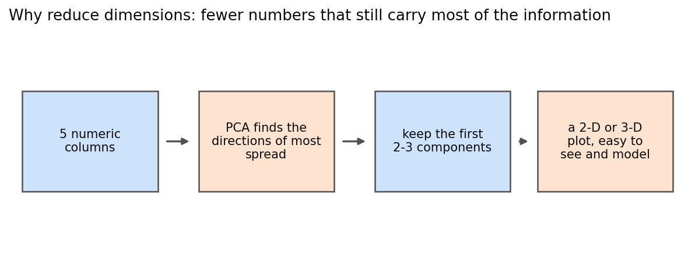
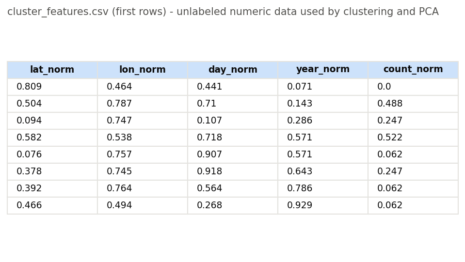
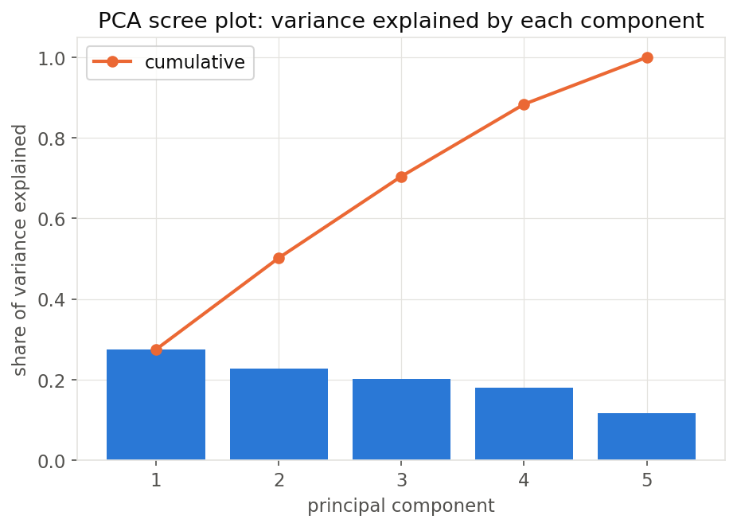
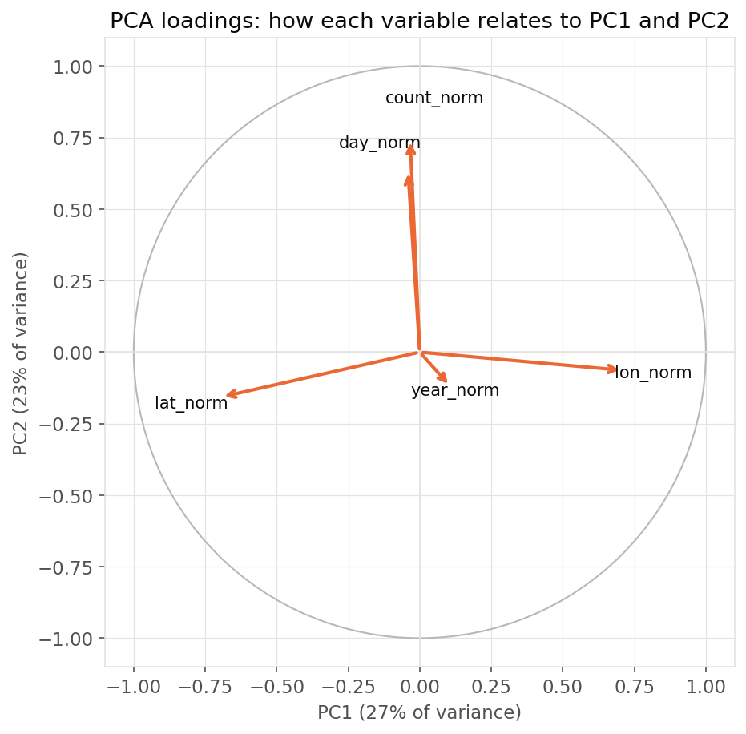
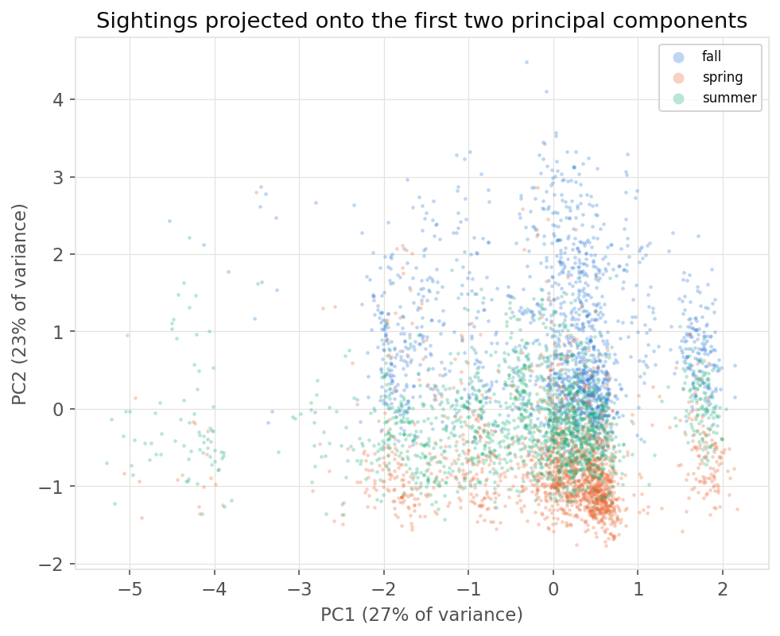

PCA
Principal component analysis (PCA) takes several numeric columns that are often correlated with one another and re-expresses them as a smaller set of new axes, the principal components, chosen so that the first captures as much of the data's total variation (spread) as possible, the second captures as much as possible of what is left, and so on. It is applied here to the same five-column, unlabeled table used for clustering.
OverviewEigenvalues and eigenvectors. PCA works by finding the eigenvectors of the data's covariance matrix, the directions along which the data is stretched, and each one's matching eigenvalue is how much variance lies along that direction. The eigenvector with the largest eigenvalue becomes the first principal component (PC1), the one with the next-largest becomes PC2, and so on, with every eigenvector pointing in a direction uncorrelated with every other one.
Dimensionality reduction. A dataset with many columns is high-dimensional, and high-dimensional data is hard to plot, since nobody can see in 5 dimensions, slower to model, and often full of redundancy when some columns move together. Dimensionality reduction addresses this by replacing the original columns with a smaller set of components built to capture as much of that spread as possible, which is what makes it possible to visualize a 5-column table as a 2-D or 3-D scatter plot, as the Results section below does, though how much of the original picture that plot actually keeps depends on how much variance those few components explain.
PCA and SVD. Singular value decomposition, or SVD, is actually how PCA gets computed under the hood: SVD factors the standardized data matrix directly into singular values and singular vectors, and those turn out to be the same eigenvalues and eigenvectors PCA uses, related by a simple rescaling (eigenvalue equals singular value squared, divided by n−1) and an arbitrary sign, since a vector and its negation describe the same axis. So PCA and SVD are not really two separate analyses here, but two names for the same computation, and the Code and Results sections below run both and confirm they agree.


code/03_eda_figures.py has been run on the gathered data.

code/03_eda_figures.py has been run on the gathered data.PCA needs the same kind of input as clustering: numeric, unlabeled columns, here the same five-column cluster_features.csv used above (location, timing, year, and flock size, all pre-scaled 0 to 1). PCA is sensitive to scale, since a column with a wider numeric range would otherwise dominate the variance just by being measured in bigger units, so the same standardization (mean 0, standard deviation 1 per column) used for k-means is applied again before PCA is run.


code/03_eda_figures.py has been run on the gathered data.Written in Python with pandas, NumPy, scikit-learn's PCA and StandardScaler, and matplotlib. A second pass runs NumPy's linalg.svd directly on the same standardized data as an explicit SVD, independent of scikit-learn's PCA, and checks that it reproduces the same result (see Results). Full code: code/04_clustering_pca.py.
The five components explain 27.5 percent, 22.7 percent, 20.3 percent, 17.9 percent, and 11.6 percent of the total variance respectively. The first two components together already explain about half of it (50.2 percent), enough to make a useful 2-D plot even though roughly half the spread in the data is left out, and the first three explain about 70.5 percent, which is closer to most of what the original five columns described.


code/03_eda_figures.py has been run on the gathered data.The loadings, how strongly each original column contributes to each component, show what the first two components actually mean. PC1 is almost a pure location axis: it loads strongly and oppositely on latitude (-0.69) and longitude (+0.71), so a high PC1 score means a sighting farther south and east, and a low score means farther north and west. PC2 is almost a pure timing-and-size axis: it loads strongly on day of year (+0.64) and flock size (+0.74), so a high PC2 score means a sighting later in the year that also tended to involve a bigger flock. Year of the record barely loads on either (PC1: +0.11, PC2: -0.12); it instead dominates PC3 alone (loading 0.91), meaning which year a sighting was logged says almost nothing about where it was, when in the year it was, or how big the flock was.


code/03_eda_figures.py has been run on the gathered data.Confirming PCA with SVD directly. As a direct check on the Overview's claim that PCA and SVD are the same computation here, SVD was run separately with NumPy on the same standardized data, independent of the scikit-learn PCA call above. Its five singular values are 480.2, 436.3, 412.1, 387.5, and 312.2, and squaring each and dividing by n−1 reproduces the exact same explained-variance percentages reported above, with a maximum difference of about 6×10-16, which is floating-point noise rather than a real difference. Its right singular vectors also match PC1 through PC5 exactly once each is allowed its own sign, a maximum difference of about 9×10-15 across every loading, confirming that scikit-learn's PCA and an independent SVD computation land on the same axes.
Projecting every sighting onto just PC1 and PC2 and coloring by season shows the same story from a different angle: spring sightings sit toward low PC2 (earlier in the year, smaller flocks), while fall sightings spread toward high PC2 and stretch into very negative PC1, the high-latitude, low-longitude corner (the far north and west, where fall records include breeding-ground areas not well represented in spring's narrower, more southern footprint).


code/03_eda_figures.py has been run on the gathered data.The five basic facts recorded about each sighting mostly reduce to two independent ideas: where it was, and a combined when-and-how-big axis, together explaining half of the data's total variation, with the year of the record forming a separate, nearly independent third idea. That last point connects back to the DataPrep/EDA tab, which found that the number of eBird records grew roughly 13-fold from 2010 to 2024 mostly because more people started using eBird. The PCA results show that the year of a record contributes a source of variation that is largely separate from the geographic and seasonal patterns captured by PC1 and PC2, which suggests that the changes over time reflected in PC3 may trace back to additional factors, including growing eBird participation. Further analysis, rather than PCA alone, would be needed to say whether that reporting growth was actually consistent across different locations and seasons. Whether migration timing itself has shifted year over year is a related but separate question: PCA only shows that year varies independently of location and timing, so the Regression tab is where that specific trend will be tested directly. Practically, this still means that later, supervised modules on this site can likely work from a 2-D or 3-D summary of location and timing instead of all five raw columns without losing much of the signal.